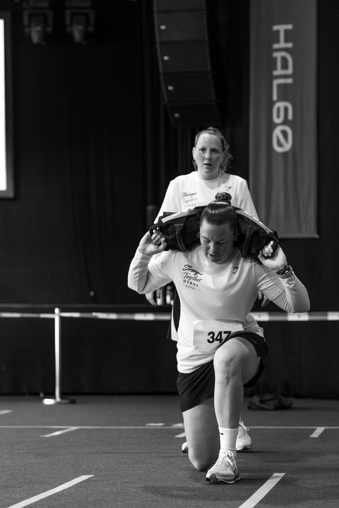
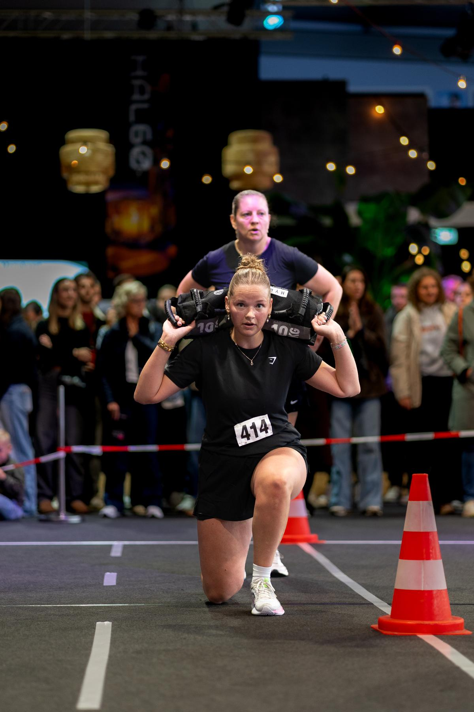
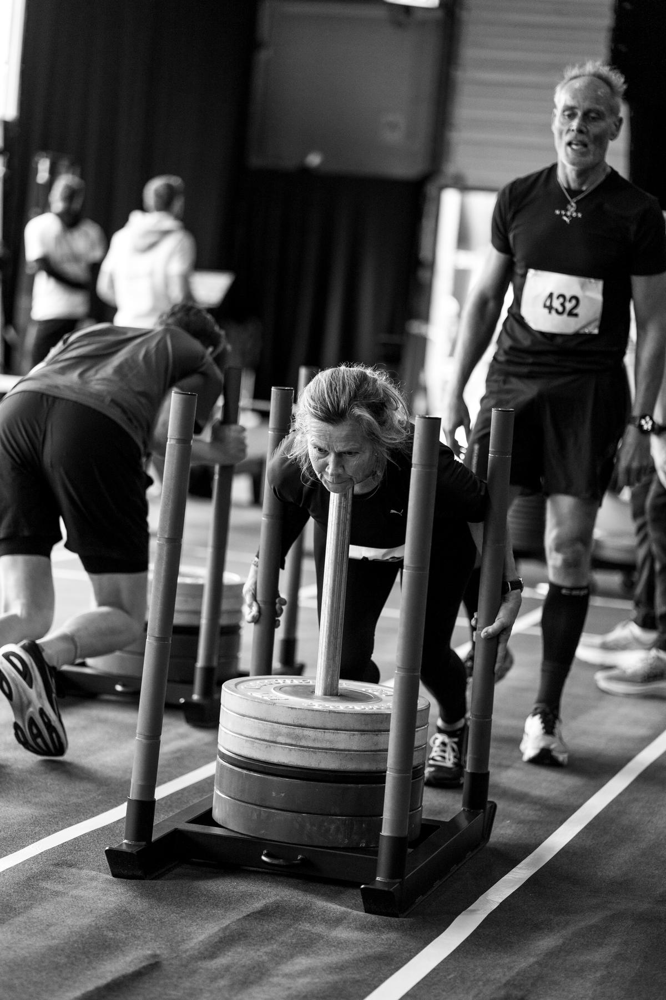
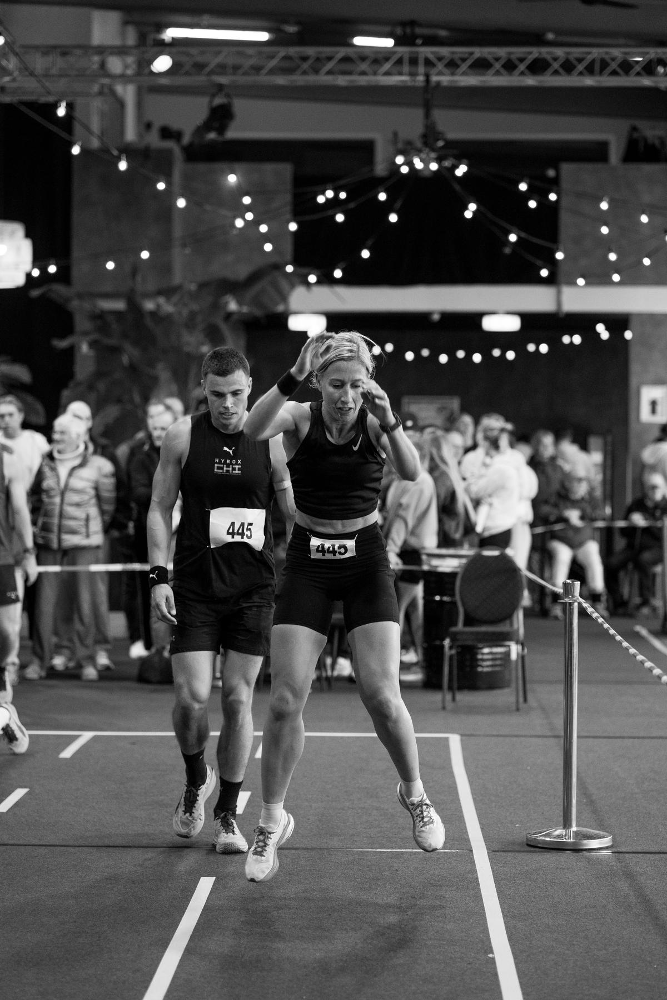
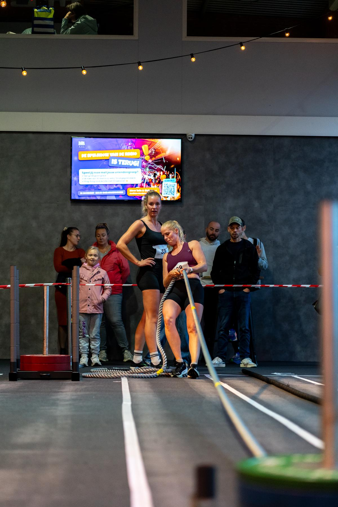

Georganiseerd door en
Hyrox-simulatie · RoelofarendsveenDe race vóór de race.
Acht keer een kilometer lopen, acht stations, echte jury en een eindtijd die telt. Train voor Utrecht of Amsterdam op je eigen vloer in Roelofarendsveen.
Start editie 04 over 0d00u00m00s
Editie 04 · zondag 14 maart 2027
8 km. 8 stations.
Na elke kilometer lopen volgt een station, altijd in deze volgorde. Wie als eerste door de finish komt na Wall Balls, wint.
- 01na 1 km lopen
SkiErg
1000 mEigen tempo, op de skiërg - 02na 2 km lopen
Sled push
50 m152 kg / 102 kg incl. slee - 03na 3 km lopen
Sled pull
50 m103 kg / 78 kg incl. slee - 04na 4 km lopen
Burpee broad jumps
80 mLichaamsgewicht - 05na 5 km lopen
Roeien
1000 mOp de roeitrainer - 06na 6 km lopen
Farmers carry
200 m2 × 24 kg / 2 × 16 kg - 07na 7 km lopen
Sandbag lunges
100 m20 kg / 10 kg - 08na 8 km lopen
Wall balls
100 herhalingen6 kg / 4 kg
Teams van vier. Iedereen loopt 2 × 1 km en doet 2 stations: persoon 1 SkiErg en sled push, persoon 2 sled pull en burpee broad jumps, persoon 3 roeien en farmers carry, persoon 4 sandbag lunges en wall balls.
Gewichten volgens de officiële Open-divisie (mannen / vrouwen). De organisatie bepaalt per editie de definitieve sim-gewichten en afstanden.
Zondag 14 maart
Voorlopig programma. Je exacte heattijd krijg je een week van tevoren per mail.
Solo, met z'n tweeën of met je team
Single mannen
Alles zelf: 8 km lopen en alle 8 stations.
Single vrouwen
Alles zelf: 8 km lopen en alle 8 stations.
Mixed dubbel
Een man en een vrouw. Samen lopen, de stations verdelen jullie zelf.
Mannen dubbel
Twee mannen. Samen lopen, de stations verdelen jullie zelf.
Vrouwen dubbel
Twee vrouwen. Samen lopen, de stations verdelen jullie zelf.
Relay
Ieder loopt 2 × 1 km en doet 2 stations. Mannen, vrouwen of mixed.
Doe je mee?
Leden van Club Confidence, By Opdam en gasten zijn welkom.
Leaderboard
Zet je eigen tijd erin
Log in met je e-mailadres en je krijgt een code van zes cijfers. Daarna houd je je tijden zelf bij, ook die van Utrecht en Amsterdam.
Vorige edities
Foto's uit HAL60. Na elke editie komt hier het complete album.





Goed om te weten
Hoe zet ik mijn tijd op het leaderboard?
Liep je de sim? Dan sta je er vanzelf op, met de tijd uit de officiële tijdwaarneming en al je rondetijden. Een tijd van een officiële Hyrox-race zet je er zelf op: klik op Tijd invoeren en vul je e-mailadres in. Je krijgt een code van zes cijfers. Daarna kies je het event en je categorie en vul je je eindtijd in. Je staat er meteen op.
Waarom een code en geen wachtwoord?
Dan heb je geen wachtwoord om te vergeten. Elke keer dat je inlogt krijg je een nieuwe code. Op hetzelfde apparaat blijf je ingelogd.
Wat betekent 'Geverifieerd'?
Die tijd komt uit de tijdregistratie van de sim of is gecontroleerd door de organisatie. Tijden die je zelf invoert krijgen het label 'Zelf ingevoerd' tot ze gecontroleerd zijn.
We liepen als duo of relayteam. Moet iedereen invoeren?
Nee. Eén persoon voert de tijd in, met de naam van de partner of de namen van het team.
Kan ik ook mijn tijd van Hyrox Utrecht of Amsterdam toevoegen?
Ja. Kies Officiële Hyrox en voeg een link naar je officiële uitslag toe. Dan kan de organisatie je tijd verifiëren.
Wat gebeurt er met mijn gegevens?
Op het leaderboard staan alleen je naam, club en tijden. Je e-mailadres gebruiken we alleen om je in te loggen en is nergens zichtbaar. Wil je alles laten verwijderen? Verwijder je tijden onder Mijn tijden of mail de organisatie.